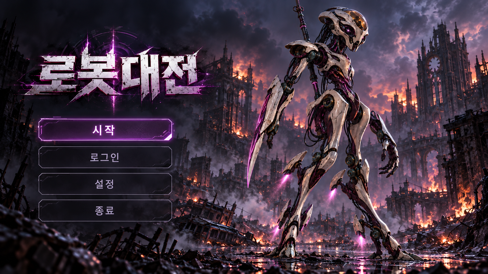

화면 01 / 타이틀 씬 & 최초 진입 튜토리얼 분기
계정을 확인하고, 최초 접속 시 가벼운 전투 튜토리얼을 거친다

01 / 계정 확인자동 로그인 확인 (기존 계정 연동 지원)
02 / 게스트 생성미연동 시작 시 게스트 계정 생성 후 로그인
03 / 최초 접속 확인Y: 가벼운 전투 튜토리얼 / N: 로비 직행
04 / 튜토리얼 전투기본 이동 프리셋 탑재 상태로 실전 조작·음성 체험 후 로비 진입
신규 유저는 훈련소에서 직접 만든 액션이 아직 없으므로, 기본 이동 액션 프리셋이 노심에 기본 탑재된 상태로 가벼운 전투 튜토리얼에 진입해 음성 활동 감지(Voice Activity Detection, VAD) 발화 명령과 조준 공격, 칭찬·비난 평가를 자연스럽게 익힌다.